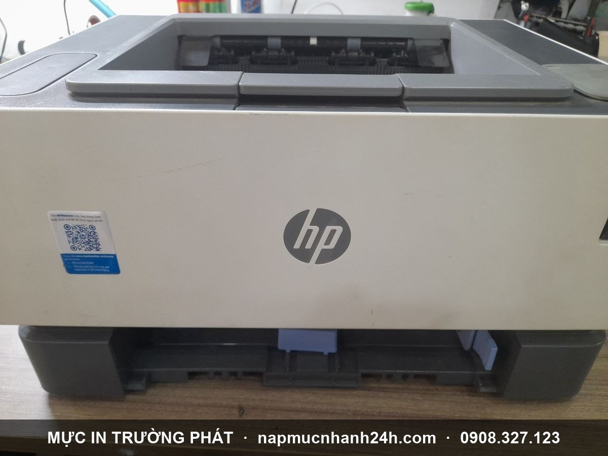
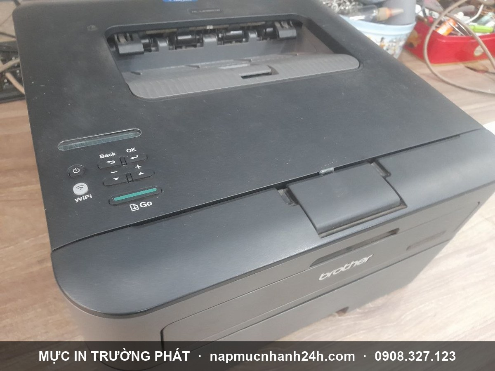

Phân biệt hộp mực và cụm drum - Khi nào thay, khi nào nạp?
Trả lời nhanh: Hộp mực (toner cartridge) chứa bột mực dùng để in - khi hết mực thì nạp lại hoặc thay cái mới. Cụm drum (drum unit, trống cảm quang) là bộ phận chuyển mực từ hộp mực lên giấy - tuổi thọ dài hơn hộp mực, khi hỏng máy báo "Replace Drum" thì phải thay cụm drum. Đây là 2 linh kiện riêng biệt trong máy in laser.
Hộp mực (toner cartridge) là gì?

Hộp mực chứa bột mực hỗn hợp để tạo chữ và hình ảnh trên giấy. Trong máy in laser, hộp mực có thể tách rời với cụm drum (như Brother HL/MFC, HP M-series cao cấp) hoặc liền khối (như HP 1020, Canon 2900).
Khi nào cần can thiệp hộp mực:
- Bản in mờ, đen, sọc, đứt chữ.
- Máy báo "Toner Low" hoặc đèn báo mực vàng/đỏ.
- In thưa chữ, có vùng trắng trên trang.
Có 2 lựa chọn:
- Nạp mực (đổ mực) lại - chi phí 90.000đ - 250.000đ tuỳ dòng. Phù hợp cho 90% trường hợp. Xem bảng giá nạp mực →
- Thay hộp mực mới - khi hộp mực bị nứt, hư cơ khí, không nạp lại được.
Tham khảo thêm: Toner trong máy in là gì - khác nhau Toner Cartridge và Ink Cartridge.
Cụm drum (drum unit) là gì?
Cụm drum gồm trống cảm quang (organic photoconductor - OPC drum) và bộ phận lăn mực. Nhiệm vụ của cụm drum là nhận mực từ hộp mực rồi chuyển sang giấy thông qua cơ chế nhiệt - điện - áp suất.
Tuổi thọ: Trung bình 1 cụm drum in được 8.000 - 25.000 trang tuỳ dòng máy (gấp 2-5 lần hộp mực). Vì vậy 1 cụm drum sẽ "ăn" 3-5 lần nạp mực mới phải thay.
Dấu hiệu cụm drum hỏng:
- Máy báo lỗi "Replace Drum" / "Thay trống" / đèn drum đỏ.
- Bản in có vệt mờ hoặc đốm đen lặp lại theo chu kỳ (thường mỗi 75-95mm trên trang).
- In ra lem mực ở mép, đường kẻ ngang.
Khi máy báo Replace Drum mà chưa muốn thay, một số dòng có thể reset đèn drum tạm thời (Brother HL-L2321D, HP NS 1020...) để in tiếp. Tuy nhiên về lâu dài vẫn cần thay drum chính hãng để giữ chất lượng in. Cần hỗ trợ thay drum tại nhà: gọi 0908.327.123 hoặc đặt sửa máy in tận nơi.
Bảng so sánh nhanh hộp mực vs cụm drum
| Tiêu chí | Hộp mực (Toner) | Cụm drum (Drum Unit) |
|---|---|---|
| Chức năng | Chứa bột mực | Chuyển mực lên giấy |
| Tuổi thọ | 1.500 - 5.000 trang | 8.000 - 25.000 trang |
| Hành động khi hết | Nạp lại hoặc thay mới | Thay mới (hiếm khi nạp lại) |
| Giá xử lý | 90k - 450k (nạp) | 350k - 1.500k (thay drum) |
| Đèn báo | Toner Low | Replace Drum / Drum Light |
Ví dụ thực tế trên máy Brother MFC-7840W và MFC-9840W
- MFC-7840W (laser trắng đen): Hộp mực và cụm drum tách rời. Khi hết mực: rút hộp mực ra khỏi cụm drum, nạp lại hoặc thay hộp mực. Khi báo Replace Drum: thay riêng cụm drum, hộp mực giữ nguyên.
- MFC-9840CDW (laser màu 4 màu): 4 hộp mực CMYK + 4 cụm drum riêng cho từng màu. Khi 1 màu hết toner chỉ thay/nạp màu đó. Khi báo drum thì thay theo màu.
Cách nhận biết và xử lý đúng
- Đọc kỹ thông báo lỗi trên màn hình hoặc đèn báo - "Toner Low" khác hoàn toàn "Replace Drum".
- Kiểm tra số trang đã in - nếu mới in 1.000-3.000 trang sau lần nạp gần nhất mà báo drum, có thể là cảm biến drum hỏng, cần kỹ thuật xem.
- Không tự ý đổ mực vào cụm drum - mực phải vào hộp mực, đổ sai chỗ sẽ làm bẩn drum.
- Khi không chắc chắn, gọi Trường Phát 0908.327.123 - tư vấn miễn phí qua điện thoại.
Tổng kết
Hộp mực và cụm drum là 2 linh kiện khác nhau với 2 vai trò khác nhau trong máy in laser. Hết mực thì nạp/thay hộp mực; báo Replace Drum thì thay cụm drum. Phân biệt đúng giúp anh chị tiết kiệm chi phí và giữ chất lượng in lâu dài.
Cần tư vấn hoặc nạp mực / thay drum tận nơi: Mực In Trường Phát phục vụ TP.HCM 24/7.
- Hotline 1: 0908.327.123 (Zalo)
- Hotline 2: 0819.007.394 (Zalo)
- Bảng giá nạp mực - Sửa máy in tận nơi
